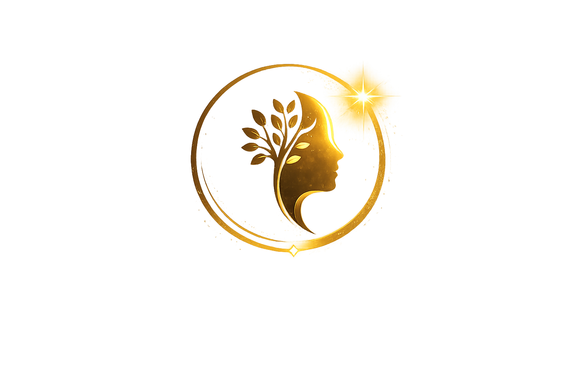

مناطق مستقلة داخل المنظومة
Independent ecosystem areas

منتال سمايل OS Mental Smile OSمرشح إطلاق الجيل الأول
منظومة عربية أولًا لاكتشاف موارد ودعم الصحة النفسية وبناء مسارات وصول أوضح.
منتال سمايل OS أساس تشغيلي منظم يساعد الناس على اكتشاف المعرفة، الأدوات، مقدمي الخدمات، المراكز، الموارد، ومسارات الدعم بطريقة أوضح، آمنة، وشفافة — بدون تشخيص، وبدون وعود علاجية، وبدون فرض مسار واحد على أي شخص.
Generation 1 Release Candidate
Arabic-first mental health discovery, support, and ecosystem operating foundation.
A governed public-benefit foundation for helping people discover trustworthy support pathways, knowledge, tools, providers, centers, and resources with clear boundaries and informed choice.
مناطق مستقلة داخل المنظومة
Independent ecosystem areas
بوابات تواصل وحدود عبور
Controlled communication boundaries
إشارات منظمة للحركة والاكتشاف
Structured discovery movement
سجلات واضحة للكيانات والعلاقات
Visible records for entities and relationships
مسؤولية واضحة وإطلاق منضبط
Accountable and controlled release authority
لا سلطة إدارية مطلقة
No hidden administrator bypass
لماذا هذا مهم؟
وفقًا لمنظمة الصحة العالمية، يعيش ما يقارب شخص من كل 7 أشخاص حول العالم مع اضطراب نفسي، وقد مثّل ذلك حوالي 1.1 مليار شخص في عام 2021. كما تشير المنظمة إلى أن أغلب الأشخاص الذين يعانون من اضطرابات نفسية لا يحصلون على رعاية فعالة.
المشكلة ليست العلاج فقط. كثير من الناس لا يعرفون من أين يبدأون، أو كيف يجدون معلومات موثوقة، أو كيف يكتشفون الموارد والخدمات والمسارات المناسبة لهم.
المصدر: منظمة الصحة العالمية — صفحة حقائق الاضطرابات النفسية
Why This Matters
Mental health is one of the largest unmet support challenges in the world. According to the World Health Organization, nearly 1 in 7 people live with a mental disorder. In 2021, that represented about 1.1 billion people globally.
WHO also notes that while effective prevention and treatment options exist, most people with mental disorders do not have access to effective care.
The challenge is not only treatment. It is also discovery: finding trustworthy information, understanding available options, locating support resources, and knowing where to begin.
Source: World Health Organization - Mental Disorders Fact Sheet
أساس تشغيلي منظم
يعرّف الجيل الأول من منتال سمايل OS منظومة منظمة تفصل بين غرف التطبيق، معرفة المكتبة، أسطح مقدمي الخدمات والمراكز، حوكمة المالك، الأرشيف، وحركة الإشارات، مع إبقائها متصلة بحدود واضحة.
Operating Foundation
Mental Smile OS Generation 1 defines a structured ecosystem where app rooms, library knowledge, public provider and center surfaces, owner governance, archive records, and signal movement remain separated but connected.
حدود السلامة العامة
Public Safety Position
العرض العام
يعرض هذا القسم قصة منتال سمايل OS للزوار لأول مرة وللمراجعين التقنيين بدون الحاجة لقراءة الأرشيف الدستوري بالكامل.
Public Showcase
The showcase explains Mental Smile OS for first-time visitors and technical reviewers without requiring them to read the full constitutional archive.
استفسار
للاستفسارات الخاصة بالشراكات أو المراجعة أو التعاون، يمكن التواصل مع مالك المشروع عبر القنوات الرسمية التي سيتم إعلانها من منتال سمايل.
النطاق المقترح: https://mentalsmile.com
Inquiry
For partnership, review, or collaboration inquiries, please contact the project owner through the official channels listed by Mental Smile.
Placeholder domain: https://mentalsmile.com